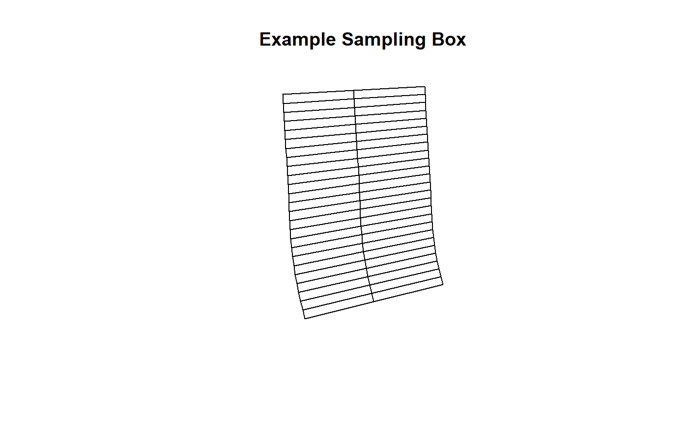

riparian.RmdWelcome to the vignette for the package riparian, a suite of tools designed to help Benton County Community Development staff analyze riparian cover extent and change in cover over time. This document models the workflow of producing an annual monitoring report for the SRP program, and demonstrates how functions in the riparian package can make monitoring faster and more efficient for the researcher.
Benton County conducts riparian monitoring whenever new high resolution (1-foot) orthographic imagery becomes available. Likely, your bosses have hired you because new imagery has just arrived. In my year, the County collected imagery in S:/maps/OrthoPhotos, which each year of imagery in a separate folder. If you are planning on doing a lot of operations on large raster data, then I suggest copying the folder containing the imagery onto an external drive. This minimizes network traffic for others and speeds performance at your workstation.
The County currently monitors 54 randomly selected sites along priority corridors, and may add additional sites based upon future permit approvals. The reason we look at the same 54 sites every year is because we are trying to detect change in cover. If we looked at a different slew of sites each year, it would be hard to know whether an increase or decrease in cover were due to variation between the sites we selected, or whether vegetation removal or accrual occurred. Using this method, we can circle individual trees that have gone missing from one year to the next. Because the sites are randomly selected and representative of conditions in the priority corridor generally, we can be reasonably confident that changes in cover within the sample reflect conditions in the priority corridor.
If you are starting a fresh session of RStudio, remember to set the path to your personal package library using the .libPaths() function (eg: .libPaths('P:/lib')). Access the polygon shapefile containing the 54 sampling boxes for each site by calling the command:
data(samples, package = 'riparian')
# use the raster package to plot spatial data
raster::plot(samples[1,], main = 'Example Sampling Box')
The function for printing plots of sample sites using new orthographic imagery is called plot_samples(), and it takes three main arguments. The first argument is called in_path and it is the path to the directory of orthographic imagery. R uses the convention of forward slashes in path names (for instance the path to my working folder for this project is ‘E:/Riparian’ and the path to the 2018 imagery is ‘E:/ortho2018’). The function expects a character string, so the path name needs to have single or double quotes around it. The second argument is out_path, and specifies where the function will print the sample plots into. The third argument, samples is the polygon shapefile of sampling boxes. By default the function looks for an object called samples in the current environment, so if you have loaded the data samples, then you can omit the third argument.
library(riparian)
# not run
# change the path names to use
plot_samples(in_path = 'E:/ortho2018',
out_path ='E:/Riparian/sites2018')The function plot_samples() has additional optional arguments. By default it will print an RGB plot and an NDVI plot for each site. You can turn off one or the other by setting print_rgb or print_ndvi to FALSE, depicted below.
If you have a new polygon object, perhaps as the result of generating new sampling sites, then set the argument samples to the polygon object.
# not run
# prints rgb only
plot_samples('E:/ortho2018', 'E:/Riparian/sites2018', print_ndvi = FALSE)
# prints ndvi only
plot_samples('E:/ortho2018', 'E:/Riparian/sites2018', print_rgb = F)
library(rgdal)
setwd('path_to_shapefile')
polys <- readOGR('mysamples.shp')
plot_samples('E:/ortho2018', 'E:/Riparian/sites2018', samples = polys)Once you have printed sampling plots for all sites, it is time to score cover extent.
In 2018 I created an excel file called samples2018.xlsx to record cover extent for the 2018 annual monitoring report and the 5-year trends and status report. In order for the functions in riparian to work correctly, it is important for you to format your record of observations exactly like the spreadsheet from 2018. First, let’s take a look at that spreadsheet by loading it into the workspace. The file is located in the extdata folder in csv format.
library(data.table)
# construct the file path to csv
csv_path <- system.file('extdata', 'samples2018.csv', package = 'riparian')
# read the csv in as a data.table
obs <- fread(csv_path)
# examine results
str(obs)You can also examine the data as a native R object, using the data function.
data(samples2018, package = 'riparian')
colnames(samples2018)
#> [1] "id" "year" "type" "1" "2" "3" "4" "5" "6" "7"
#> [11] "8" "9" "10" "11" "12" "13" "14" "15" "16" "17"
#> [21] "18" "19" "20" "21" "22" "23" "24" "25" "26" "27"
#> [31] "28" "29" "30" "31" "32" "33" "34" "35" "36" "37"
#> [41] "38" "39" "40" "41" "42" "43" "44" "45" "46" "47"
#> [51] "48" "49" "50"The spreadsheet has 53 columns, named id, year, type and then numbered 1:50. Your spreadsheet must adhere to this format, using 53 columns named just so. The id column refers to an individual site id assoiated with each site. The year column specifies the year of observation. The type column is for grouping sites into subsets, such as sites with active permits to track compared to random samples, and may be left blank without consequence. The columns numbered 1:50 correspond to the numbers on the sample plots printed by plot_samples(). When you are scoring observations, enter the cover score associated with the number on the sampling plot under the column with the same number in the spreadsheet.
The easiest way to adhere to the format requirement is to simply add new observations to the bottom of the 2018 spreadsheet, and save it under a new name. You can convert the R object into a csv file using the command write.csv(samples2018, 'myfile.csv') and fill in your observations using Excel.
When you are done editing your file in Excel, export it into csv format, which is a tried and true way to share data between programs. Read the csv into RStudio using the data.table package.
The riparian package takes advantage of several features of the data.table package. The data.table is a special class of data.frame, with unique syntax for subsetting data.
The first subsetting you will likely want to do is subset by year. Do this by selecting the column year and setting it equal to the target value. Place this logical test in brackets following the data.table name, and R will return only those observations that pass the test. Note that logical tests use two equal signs (eg. year == 2018).
library(data.table)
# print summary table of obs by year
samples2018[ , .N, by = year]
#> year N
#> 1: 2018 170
#> 2: 2016 169
#> 3: 2009 54
# subset year of interst
sub18 <- samples2018[year == 2018]
# very subset is correct
sub18[ , .N, by = year]
#> year N
#> 1: 2018 170The type variable is a catch-all for you to define and compare groups within the sample. The 2018 dataset includes a type value permit, which refers to sites with active permits we selected for random monitoring. We can split the dataset into two groups by using == and != (not equal) to divide the data by type:
# print table of obs by type
samples2018[ , .N, by = type]
#> type N
#> 1: random 27
#> 2: trib 231
#> 3: permit 135
# subset permit and nopermit sites
permit_sites <- samples2018[type == 'permit']
nopermit_sites <- samples2018[type != 'permit']
# examine results
permit_sites[ , .N, by = type]
#> type N
#> 1: permit 135
nopermit_sites[ , .N, by = type]
#> type N
#> 1: random 27
#> 2: trib 231To subset by multiples criteria, you can subset sequentially or use logical operators & and | to nest multiple logical tests.
# subset 2018 sites with type trib or permit
sub <- samples2018[year == 2018]
sub <- sub[type == 'trib' | type == 'permit']
# very subset has correct number of obs
sub[, .N, by = .(year,type)]
#> year type N
#> 1: 2018 trib 116
#> 2: 2018 permit 50
# subset 2016 sites with type trib or permit
sub <- samples2018[year == 2016]
sub <- sub[type == 'trib' | type == 'permit']
# very subset has correct number of obs
sub[, .N, by = .(year, type)]
#> year type N
#> 1: 2016 trib 115
#> 2: 2016 permit 50The function plot_cover(csv) produces a plot of cover extent over all the samples in the object csv. To produce a plot of cover extent for a given year, subset the observations in the data.table by year in the argument to plot_cover(). Optional arguments: the argument title sets the name of the .png file printed into the working directory. The argument heading sets a title for the plot (default is blank). The argument leg_pos adjusts the legend position and accepts the arguments topright, topleft, bottomright and bottomleft.
library(riparian)
#>
#> Attaching package: 'riparian'
#> The following object is masked _by_ '.GlobalEnv':
#>
#> samples2018
plot_cover(samples2018[year == 2018])
#> mean sd n upr lwr
#> [1,] 0.7319412 0.3300731 170 0.7815595 0.6823229
plot_cover(samples2018[year == 2009])
#> mean sd n upr lwr
#> [1,] 0.8172222 0.2556192 54 0.8854016 0.7490429
plot_cover(samples2018[year == 2018 & type != 'trib'])
#> mean sd n upr lwr
#> [1,] 0.8416667 0.2417917 54 0.9061579 0.7771755The function plot_change(csv, year1, year2) produces a plot of cover extent change from year1 to year2 across samples in csv. Here the function does the subsetting for you in the case of year, but you can still subset csv by type. The optional arguments are the same as for plot_cover.
plot_change(samples2018, 2016, 2018)
#> mean sd n upr lwr
#> [1,] -0.01047619 0.09416389 168 0.003763017 -0.0247154
plot_change(samples2018[type != 'trib'], 2016, 2018)
#> mean sd n upr lwr
#> [1,] -0.002962963 0.06778517 54 0.01511685 -0.02104277
plot_change(samples2018, 2009, 2016)
#> mean sd n upr lwr
#> [1,] 0.02740741 0.05857378 54 0.04303034 0.01178448A staff member from the planning department will email you an Excel sheet containing all permits the County has issued since the last monitoring report. Reading the file into R will require a little extra work preparing the data in Excel. Open the permit list in Excel, and note that the first column should be Record Number and the fifth should read MapTaxlot #. Likely, many of the MapTaxlot numbers will be printed in scientific notation in their cells. That is a problem, because R will interpret the cells as character vectors, and the ending 7 digits of the MapTaxlot number will be lost. But first, scroll down and note the first cell where the MapTaxlot number has a little green triangle in the upper left corner. In order to avoid MapTaxlot numbers displaying in scientific notation, some planning staff display numbers as text in the Excel formatting options. This is problematic because Excel converts them back to numbers and hence to scientific notation when exporting the file in csv format, and R then interprets it as a character string again.
Click on the first cell where a MapTaxlot number has the green triangle in the upper left corner, then scroll to the last permit on the sheet and click on its MapTaxlot number while holding the shift key so that you select the entire column below the cell with the green triangle. Scroll back to the first cell you selected and click on the yellow exclamation point, bringing down a dropdown menu. From the menu select Convert to Number, and watch all the numbers displayed as text revert to scientific notation.
Now scroll to the top of the sheet and select the whole column for MapTaxlot #. Right click on a cell in the highlighted column and click on Format Cells.... The number tab should display. Select from the Category menu Number. Change Decimal places from 2 to 0. Click OK. With all MapTaxlot numbers converted to number strings and displayed as integers, it is now safe to export the sheet as a csv file to import into R. Select Save As, choose a directory, and from the Save as type menu select CSV (Comma delimited).
Read the csv file into R using the same fread command as for the cover score sheet.
To demonstrate the functionality of the package, I have included a list of permits from 2013 to 2018 as a data object, which you can access using the data function.
data(permits_13to18, package = 'riparian')
colnames(permits_13to18)
#> [1] "record_no" "record_type" "proj_name"
#> [4] "description" "maptaxlot" "numer"
#> [7] "dir" "street_name" "street_type"
#> [10] "post_dir" "unit_no" "city"
#> [13] "status" "related_records" "opened"
#> [16] "expires" "balance" "created_by"
#> [19] "assigned_to_staff"The planning staff is concerned with which MapTaxlots have experienced net cover decrease, especially if the decrease is greater than 10%. The build_change_table() function produces a change table designed for use by the planning staff. The change table ranks sampling sites by mean cover change, all MapTaxlot numbers falling within the sampling box and all permits associated with a MapTaxlot on the permit list.
The full syntax for the function is build_change_table(csv, year1, year2, polys, lots, permits). The argument csv is the record of cover scores for the sampling sites. The arguments year1 and year2 are integers matching values in the year column of csv. The argument polys is the spatial polygons object of samplings boxes. The argument lots is the polygons object of MapTaxlots, and permits is the permit list formatted according to the instructions in the previous section. The output is a csv file printed to the working directory.
The time will come when you need to draw new sampling boxes to sample new places. Typically the County will approve new permits and flag those permits that may result in reduction of cover in the priority corridor. Your bosses may ask you to include newly permitted areas in your sample. The sample_streams() function generates new sampling boxes along the priority corridor within the area of your choice.
The full syntax for the function is sample_streams(n=100, lots=prc_lots, prc=prc_per, strms=prc_strms). The argument n is the number of sampling boxes you want to produce, and defaults to 100. The argument prc is the line file along which the function generates random points. The default is the NHD set of perennial or fish-bearing streams, clipped to the extent of the RR zone, and you should be able to leave the default as is. The argument ‘strms’ defaults to the WSI hydro-enforced drainage layer clipped to the priority corridor. The WSI hydro-enforced drainage layer is more accurate than the NHD dataset, so the function finds the nearest point on the WSI layer to the random point generated on the NHD layer, and draws the sampling box around that point. The argument lots is the polygon shapefile that specifies the area within which you want to draw samples, and defaults to the whole priority corridor. If you have a list of permitted sites to check, then clip the taxlot shapefile down to only those taxlots you want to check, and specify the location of the resulting shapefile in the lots argument.
To demonstrate the function, I will generate a random sample of lots within the priority corridor, then draw sample boxes using sample_streams().
set.seed(100)
# random lots from the priority corridor
mtls <- as.character(prc_mtls$MapTaxlot[prc_mtls$MapTaxlot != ''])
mtls <- mtls[sample.int(length(mtls), 10)]
random_lots <- prc_mtls[prc_mtls$MapTaxlot %in% mtls, ]
# sample 3 from 10 spots without regard for which lot
samp1 <- sample_streams(n = 3, lots = random_lots)
#> [1] 1
#> [1] 2
#> [1] 3
# sample 10 spots, 1 from each lot
samp2 <- sample_streams(n = 1, lots = random_lots[1,])
#> [1] 1
for (i in 2:length(random_lots)) {
samp2 <- rbind(samp2, sample_streams(n = 1, lots = random_lots[i, ]))
}
#> [1] 1
#> [1] 1
#> [1] 1
#> [1] 1
#> [1] 1
#> [1] 1
#> [1] 1
#> [1] 1
#> [1] 1
#> [1] 1
#> [1] 1The pred_cover() function predicts the level of vegetative cover using an NDVI-based model. Over a given spatial polygon, the function predicts the level of cover based upon orthographic imagery, and prints a new raster of predicted cover values to a specified directory out_path.
The full syntax of the function is pred_cover(polys, in_path, out_path, rgb_path = NULL, cir_path = NULL, buff = prc_buff). The argument polys is the spatial polygon object of taxlots over which you want to predict cover. This function is designed to default to 4-band imagery, so the argument in_path is a character string representing a directory path to 4-band imagery. In 2016, the County received 3-band RGB and CIR imagery. If this is the case for you, set the arguments rgb_path and cir_path to directory paths to the RGB and CIR imagery respectively, and do not specify an argument for in_path. The argument buff is the riparian buffer for the WSI hydro-enforced layer clipped to the Rural Residential zone.
# not run
# change directory paths to point to your data
pred_cover(random_lots, out_path = 'E:/Riparian/pred_2016/',
rgb_path = 'S:/maps/OrthoPhotos/Hexagon2016/RGB/',
cir_path = 'S:/maps/OrthoPhotos/Hexagon2016/CIR/')
pred_cover(random_lots, 'E:/ortho2018', 'E:/Riparian/pred_2018/')
pred_change('E:/Riparian/pred_2016', 'E:/Riparian/pred_2018', 'E:/Riparian/chng_16to18')The pred_change() function predicts the level of change in riparian cover based upon the output of the pred_cover() function. The full syntax is pred_change(year1_path, year2_path, out_path). The argument year1_path is a character string specifying a directory path to the rasters produced by pred_cover() for year 1, and the argument year2_path is a character string specifying a directory path to the rasters produced by pred_cover() for year 2. The argument out_path specifies the directory to which the function will print rasters with values of predicted change in cover.
Produce a table summarizing the predicted change in cover using the function pred_change_report(). The full syntax is pred_change_report(chng_path, year1_path, year2_path, permits = permits_13to18, lots = prc_lots, title = 'pred_chng_table.csv'). The argument chng_path is the path to the directory of predicted change rasters produced by pred_change(). The arguments year1_path and year2_path specify the paths to the directories of predicted cover rasters output by pred_cover() for year 1 and year 2 respectively. The argument permits is the same csv file of approved permits you used to produce change tables of randomly selected sites. The default is set to the list of permits from 2013 to 2018 to help demonstrate the functionality of the package in this vignette. The argument lots defaults to a shapefile of taxlots in the priority corridor, and the function uses this file to search for which taxlot a given area of the priority corridor lies within. The argument title specifies the title of the predicted change table, which should end in ‘.csv’, and prints to the working directory.